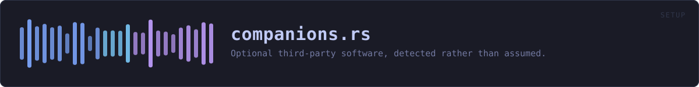

crates/veilvoice-setup/src/companions.rs
veilvoice-setup · 1131 lines · read the source here · or on GitHub
Optional third-party software, detected rather than assumed.
Four programs make VeilVoice easier to live with and none of them is part of VeilVoice. A virtual audio cable is what lets live mode feed a veiled microphone into a video call; an audio editor is how most people trim a recording before veiling it. This module says which are already on the machine, who makes each one, under what licence, and, for the ones that are not, exactly what command would install it.
Three rules, and none of them relaxes
Nothing is installed without an explicit yes. There are no checkboxes here to leave ticked. Companion::offer produces a command; running it is a separate deliberate act by the caller, on one named program at a time.
VeilVoice never runs somebody else's installer. Where the software is proprietary or ships as a driver, and VB-CABLE is both, the offer is to open the vendor's page, not to fetch and execute an unverified binary. This project's front page is about verifying what you run; downloading a signed release, checking its signature, and then silently running an unchecked third-party .exe from the same program would be a strange thing to do with that reputation.
Privilege is reported, never requested. A system package manager needs root, and a graphical program cannot honestly collect a sudo password. Offer::Command carries a needs_privilege flag, run refuses any command that sets it, and a front end shows such a command rather than pretending to run it.
Detection is a probe, and says when it could not tell
Presence has three states, not two. "I looked in the places this software installs itself and found nothing" and "I could not read the place I wanted to look" are different answers, and reporting the second as the first is how a tool ends up offering to install something that is already there. Every probe here is a file-system or PATH lookup: no subprocess, no registry sweep, and nothing that takes long enough to need a spinner.
The probes look where each program installs itself by default. Somebody who has put Audacity somewhere unusual will be told it was not detected, which is exactly what the words say: Presence::NotDetected is not a claim that the software is absent from the machine.
In plain words
Optional extra software that makes VeilVoice easier to live with, none of which is part of VeilVoice.
Each one is looked for rather than assumed, and each is described first: what it is, who makes it, what licence it has and why VeilVoice mentions it at all. Nothing is installed without an explicit yes, and the exact command is shown before the question.
WHAT THIS FILE CONTAINS
1131 lines defining 25 functions (10 public), 3 types and 2 constants. Everything below is read out of the source, so it cannot disagree with the code.
The types it owns.
enum Presenceline 59 · What a probe found.enum Offerline 92 · What VeilVoice can offer to do about a companion that is not there.struct Companionline 150 · One piece of optional third-party software.
What happens when it runs. These are the ways in: public, and nothing else in this file calls them, so they are what an outside caller reaches first.
Presence::is_presentline 76 · True only for Presence::Present.Presence::describeline 81 · A short line for a user interface, in the project's usual register.Offer::is_runnableline 124 · True when a front end may run this itself.Offer::command_lineline 136 · The command as a single line, for showing or copying.Companion::detectline 169 · Look for it, without changing anything.
reachesdetect_audacity,detect_blackhole,detect_ffmpeg,detect_gnupg,detect_pipewire,detect_vb_cable,env_path,first_existing,on_path,find_inCompanion::offerline 182 · What could be done about it on this platform.
reachesaudacity_offer,brew,ffmpeg_offer,gnupg_offer,on_path,unix_package,find_infor_this_platformline 309 · The companions that mean anything on the platform this is running on.by_keyline 316 · Find one by Companion::key.runline 326 · Run an offer, and return what it printed.open_pageline 367 · Open a companion's own page in the user's browser.
WHAT CALLS WHAT
The functions this file defines, and the calls between them. An edge means the callee's name appears, called, inside the caller's body. This is a syntactic reading, not a type-resolved one. 22 of 25 functions are drawn; the diagram is bounded at 22 so it stays readable.
The same graph as Mermaid source
%%{init: {"theme":"base","themeVariables":{"background":"#1a1b26","primaryColor":"#1f2335","primaryTextColor":"#c0caf5","primaryBorderColor":"#7aa2f7","secondaryColor":"#16161e","tertiaryColor":"#16161e","lineColor":"#737aa2","textColor":"#c0caf5","mainBkg":"#1f2335","nodeBorder":"#7aa2f7","clusterBkg":"#16161e","clusterBorder":"#2f3549","fontFamily":"ui-monospace, SFMono-Regular, Consolas, monospace","fontSize":"14px"}}}%%
flowchart TD
n_is_present(["Presence::is_present<br/>line 76"])
n_describe(["Presence::describe<br/>line 81"])
n_is_runnable(["Offer::is_runnable<br/>line 124"])
n_command_line(["Offer::command_line<br/>line 136"])
n_detect(["Companion::detect<br/>line 169"])
n_offer(["Companion::offer<br/>line 182"])
n_for_this_platform(["for_this_platform<br/>line 309"])
n_on_path["on_path<br/>line 402"]
n_find_in["find_in<br/>line 417"]
n_first_existing["first_existing<br/>line 425"]
n_env_path["env_path<br/>line 434"]
n_detect_vb_cable["detect_vb_cable<br/>line 447"]
n_detect_blackhole["detect_blackhole<br/>line 470"]
n_detect_pipewire["detect_pipewire<br/>line 492"]
n_detect_audacity["detect_audacity<br/>line 503"]
n_unix_package["unix_package<br/>line 543"]
n_detect_ffmpeg["detect_ffmpeg<br/>line 569"]
n_ffmpeg_offer["ffmpeg_offer<br/>line 577"]
n_brew["brew<br/>line 616"]
n_detect_gnupg["detect_gnupg<br/>line 641"]
n_gnupg_offer["gnupg_offer<br/>line 656"]
n_audacity_offer["audacity_offer<br/>line 688"]
n_audacity_offer --> n_brew
n_audacity_offer --> n_on_path
n_audacity_offer --> n_unix_package
n_brew --> n_on_path
n_detect --> n_detect_audacity
n_detect --> n_detect_blackhole
n_detect --> n_detect_ffmpeg
n_detect --> n_detect_gnupg
n_detect --> n_detect_pipewire
n_detect --> n_detect_vb_cable
n_detect_audacity --> n_env_path
n_detect_audacity --> n_first_existing
n_detect_audacity --> n_on_path
n_detect_ffmpeg --> n_on_path
n_detect_gnupg --> n_on_path
n_detect_pipewire --> n_on_path
n_detect_vb_cable --> n_env_path
n_ffmpeg_offer --> n_brew
n_ffmpeg_offer --> n_on_path
n_ffmpeg_offer --> n_unix_package
n_gnupg_offer --> n_brew
n_gnupg_offer --> n_on_path
n_gnupg_offer --> n_unix_package
n_offer --> n_audacity_offer
n_offer --> n_brew
n_offer --> n_ffmpeg_offer
n_offer --> n_gnupg_offer
n_on_path --> n_find_in
n_unix_package --> n_on_path
click n_is_present href "https://github.com/tilas01/veilvoice/blob/main/crates/veilvoice-setup/src/companions.rs#L76" "open the source"
click n_describe href "https://github.com/tilas01/veilvoice/blob/main/crates/veilvoice-setup/src/companions.rs#L81" "open the source"
click n_is_runnable href "https://github.com/tilas01/veilvoice/blob/main/crates/veilvoice-setup/src/companions.rs#L124" "open the source"
click n_command_line href "https://github.com/tilas01/veilvoice/blob/main/crates/veilvoice-setup/src/companions.rs#L136" "open the source"
click n_detect href "https://github.com/tilas01/veilvoice/blob/main/crates/veilvoice-setup/src/companions.rs#L169" "open the source"
click n_offer href "https://github.com/tilas01/veilvoice/blob/main/crates/veilvoice-setup/src/companions.rs#L182" "open the source"
click n_for_this_platform href "https://github.com/tilas01/veilvoice/blob/main/crates/veilvoice-setup/src/companions.rs#L309" "open the source"
click n_on_path href "https://github.com/tilas01/veilvoice/blob/main/crates/veilvoice-setup/src/companions.rs#L402" "open the source"
click n_find_in href "https://github.com/tilas01/veilvoice/blob/main/crates/veilvoice-setup/src/companions.rs#L417" "open the source"
click n_first_existing href "https://github.com/tilas01/veilvoice/blob/main/crates/veilvoice-setup/src/companions.rs#L425" "open the source"
click n_env_path href "https://github.com/tilas01/veilvoice/blob/main/crates/veilvoice-setup/src/companions.rs#L434" "open the source"
click n_detect_vb_cable href "https://github.com/tilas01/veilvoice/blob/main/crates/veilvoice-setup/src/companions.rs#L447" "open the source"
click n_detect_blackhole href "https://github.com/tilas01/veilvoice/blob/main/crates/veilvoice-setup/src/companions.rs#L470" "open the source"
click n_detect_pipewire href "https://github.com/tilas01/veilvoice/blob/main/crates/veilvoice-setup/src/companions.rs#L492" "open the source"
click n_detect_audacity href "https://github.com/tilas01/veilvoice/blob/main/crates/veilvoice-setup/src/companions.rs#L503" "open the source"
click n_unix_package href "https://github.com/tilas01/veilvoice/blob/main/crates/veilvoice-setup/src/companions.rs#L543" "open the source"
click n_detect_ffmpeg href "https://github.com/tilas01/veilvoice/blob/main/crates/veilvoice-setup/src/companions.rs#L569" "open the source"
click n_ffmpeg_offer href "https://github.com/tilas01/veilvoice/blob/main/crates/veilvoice-setup/src/companions.rs#L577" "open the source"
click n_brew href "https://github.com/tilas01/veilvoice/blob/main/crates/veilvoice-setup/src/companions.rs#L616" "open the source"
click n_detect_gnupg href "https://github.com/tilas01/veilvoice/blob/main/crates/veilvoice-setup/src/companions.rs#L641" "open the source"
click n_gnupg_offer href "https://github.com/tilas01/veilvoice/blob/main/crates/veilvoice-setup/src/companions.rs#L656" "open the source"
click n_audacity_offer href "https://github.com/tilas01/veilvoice/blob/main/crates/veilvoice-setup/src/companions.rs#L688" "open the source"
classDef entry fill:#1f2335,stroke:#7aa2f7,color:#c0caf5
class n_is_present,n_describe,n_is_runnable,n_command_line,n_detect,n_offer,n_for_this_platform entry
classDef helper fill:#1f2335,stroke:#bb9af7,color:#c0caf5
class n_on_path,n_find_in,n_first_existing,n_env_path,n_detect_vb_cable,n_detect_blackhole,n_detect_pipewire,n_detect_audacity,n_unix_package,n_detect_ffmpeg,n_ffmpeg_offer,n_brew,n_detect_gnupg,n_gnupg_offer,n_audacity_offer helper
subgraph chart_key ["Key"]
direction LR
key_entry["entry: a way in: public, and nothing in this file calls it"]
key_helper["helper: private to this file"]
end
class key_entry entry
class key_helper helperThis site loads no third-party script, so it cannot run Mermaid; the diagram above is the same nodes and edges drawn by the generator instead. GitHub renders the source below directly.
ITEMS
| Item | Line | Documentation |
|---|---|---|
Presence pub enum | 59 | What a probe found. |
Presence::is_present pub fn | 76 | True only for Presence::Present. |
Presence::describe pub fn | 81 | A short line for a user interface, in the project's usual register. |
Offer pub enum | 92 | What VeilVoice can offer to do about a companion that is not there. |
Offer::is_runnable pub fn | 124 | True when a front end may run this itself. |
Offer::command_line pub fn | 136 | The command as a single line, for showing or copying. |
Companion pub struct | 150 | One piece of optional third-party software. |
Companion::detect pub fn | 169 | Look for it, without changing anything. |
Companion::offer pub fn | 182 | What could be done about it on this platform. |
ALL pub const | 228 | Every companion this project knows about, in the order a front end should show them. |
for_this_platform pub fn | 309 | The companions that mean anything on the platform this is running on. |
by_key pub fn | 316 | Find one by Companion::key. |
run pub fn | 326 | Run an offer, and return what it printed. |
open_page pub fn | 367 | Open a companion's own page in the user's browser. |
on_path fn | 402 | Is stem an executable on this process's PATH? |
find_in fn | 417 | The first of names in an absolute entry of path, a PATH value. |
first_existing fn | 425 | The first of candidates that exists. |
env_path fn | 434 | The path an environment variable names, with rest joined onto it. |
detect_vb_cable fn | 447 | VB-CABLE installs an audio driver, and a driver is a file in a directory any user can read. |
detect_blackhole fn | 470 | BlackHole is a HAL plug-in, and those live in exactly one place. |
detect_pipewire fn | 492 | PipeWire is running or it is not, and pw-cli beside it is the sign that the userspace tools are installed. |
detect_audacity fn | 503 | Audacity is on PATH on Unix and in one of three directories on Windows. |
unix_package fn | 543 | The install command for package from whichever Unix package manager is here. |
detect_ffmpeg fn | 569 | ffmpeg, which is on PATH or is not. |
ffmpeg_offer fn | 577 | How ffmpeg would be installed here. |
brew fn | 616 | An offer to install something through Homebrew, or the reason there is none. |
detect_gnupg fn | 641 | GnuPG, which is on PATH or is not. |
gnupg_offer fn | 656 | How GnuPG would be installed here. |
audacity_offer fn | 688 | The route to Audacity differs per platform, and on Linux per distribution. |
UNIX_PACKAGE_MANAGERS const | 721 | Package managers, and the arguments that install one named package non-interactively. |
ffmpeg_tests mod | 1019 |